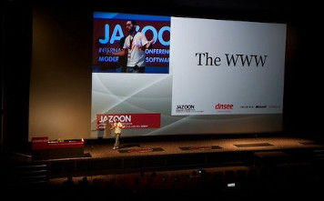

I’ve taken the stage at a few conferences in the last years: if you want to see my presentations you’d better visit my slideshare account.
Here’s a summary of the most important ones:

- Tips and tricks for your Service Oriented Architecture, presented at the CakeFest 2013 in San Francisco (US), in which I explained the way we approached SOA at Namshi
- HTTP colon slash slash: end of the road, presented at
the International PHP Conference 2012 in Mainz (GER), dealing with the history of the
HTTPprotocol, a look atSPDYandHTTP/2.0 - Got units?, presented at OSIDays 2011 in Bengaluru (IND), an introductive talk about implementing Dijkstra’s algorithm in PHP with test-driven development
- Graph databases in PHP, given at the PHPCon Poland 2011 in Kielce (PL), dealing with the theory behind graph databases and how to use OrientDB in PHP
- REST in peace: a handbook of software waste, given at the Jazoon 2011 in Zurich (CH), a 20-minutes presentation which ranked me 2nd at the Jazoon Rookie Award, dealing with REST antipatterns and the implementation of REST in software architectures
- CMF, a pain in the F, given at the PHPDay 2011 in Verona (ITA) together with David, in which we explained a few well-know RDBMS antipatterns faced during the implementation of a CMF, introducing some NoSQL solutions that may help you
- REST in peace, given at the Codemotion 2011 in Rome (ITA), dealing with RESTful architectures and advanced gateway caching with the ESI technology
- Magento++, given at the PHPDay 2010 in Teramo (ITA), about the e-commerce PHP platform Magento
- OS business models, given at the BetterSoftware 2010 in Florence (ITA), in which I explained some business models real-world OS companies successfully adopted
- What’s new in Joomla! 1.6?, given at the JoomlaDay 2009 in Rome (ITA), dealing with the new release of the Joomla! CMS